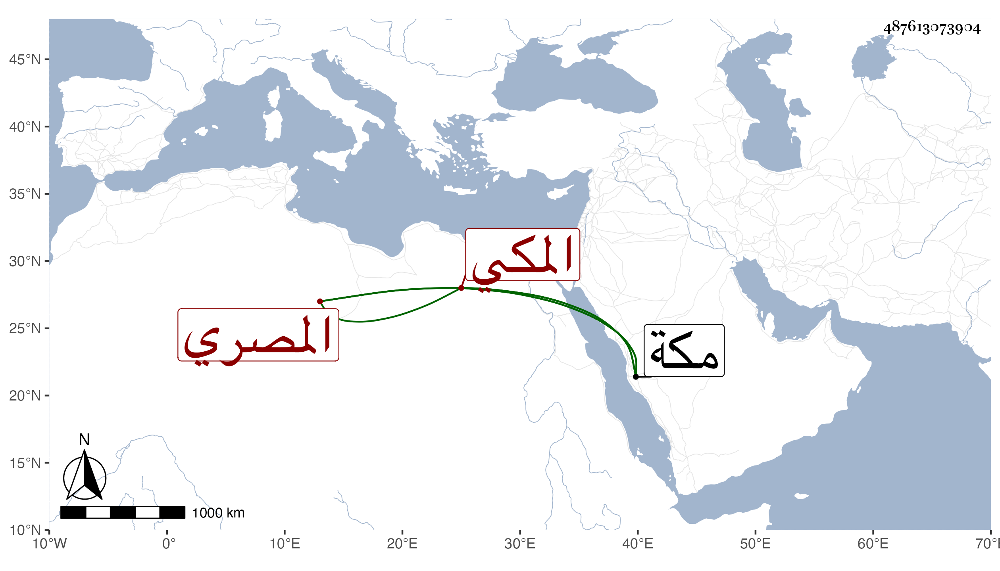

0902Sakhawi.DawLamic.ITO20230111-ara1.EIS1600.487613073904
Biography ID: 487613073904
804
محمد بن أبي القسم بن محمد بن علي بن حسين أو محمد المصري الأصل المكي الماضي جده وعم أبيه أحمد والآتي أبوه ويعرف بابن جوشن . كان يقرأ القرآن ويتعانى التجارة كجده بحيث خلف أموالا كثيرة وكان يؤدي زكاة ثماره وحبه بحيث يقال إنه عند موته انفرد عن أهل مكة أوجلهم بذلك مع نسبته لإمساك . مات بمكة في صفر سنة ثلاث وتسعين وأنا هناك وقد زاحم الستين أو جازها رحمه الله .
